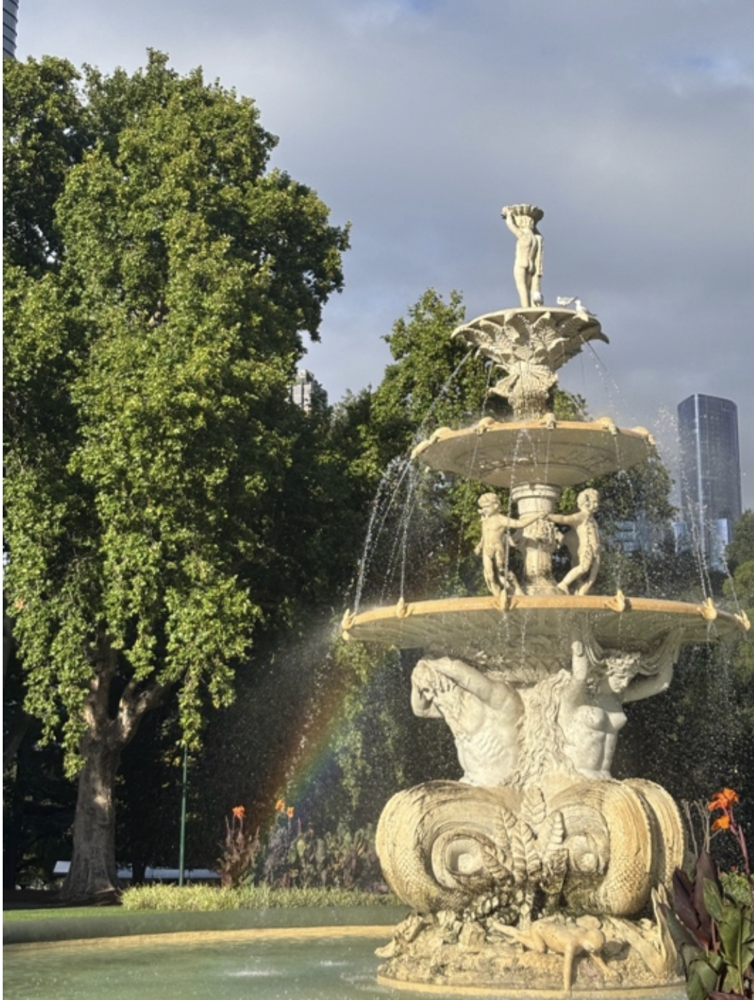

Reflect
Dive into thoughts, emotions and memories.
Concept Overview
The View From Within is a space for reflection, contrast and perception.
It explores the quiet inner world and the visible exterior world through photography, atmosphere, memory and personal observation.

Dive into thoughts, emotions and memories.
Bridge the gap between the inside and outside world.
See the world through different lenses.
This website uses image, space and movement to compare private interior experiences with the visual language of public environments.